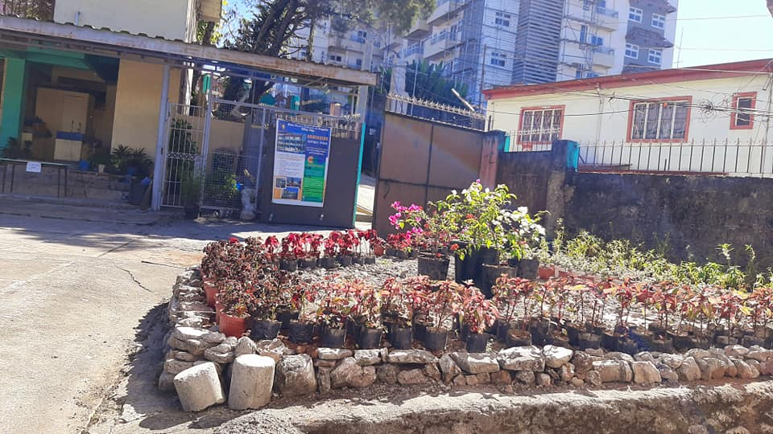
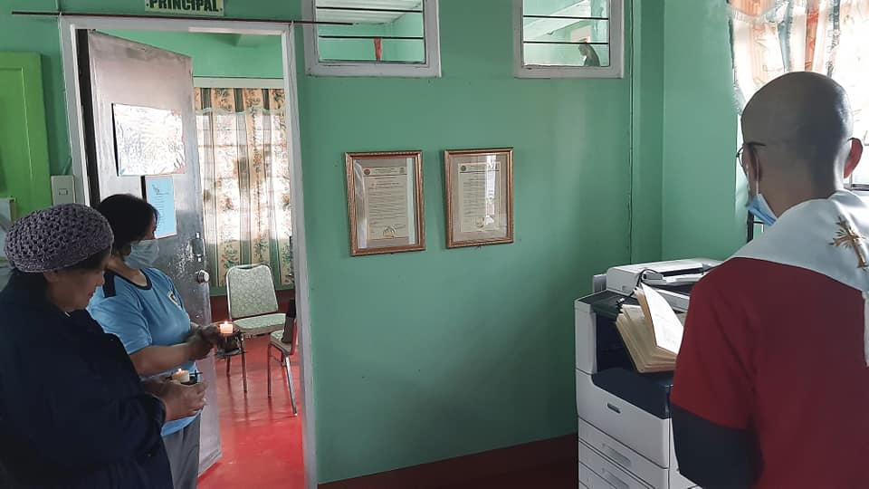
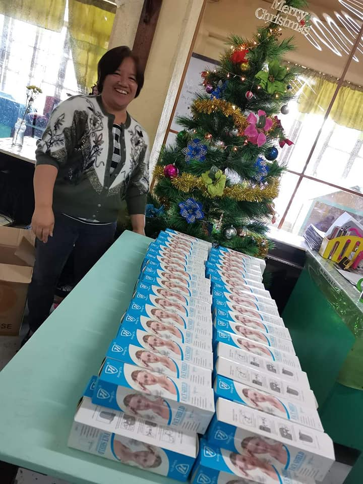
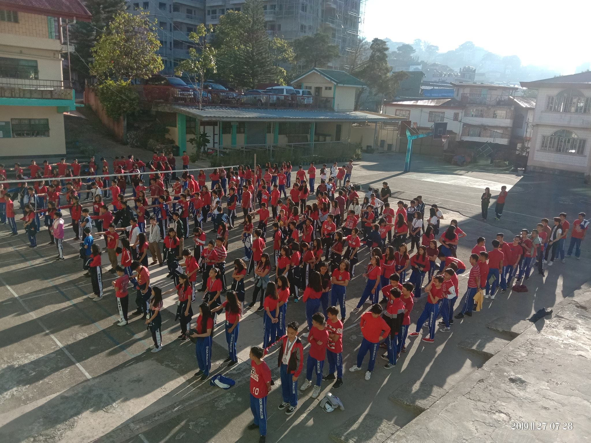

LANDSCAPE PROJECT SY: 2020-2021
Don Bosco School of Baguio City, Inc.- Junior High School would like to express our gratitude to Mrs. Teresa C. Camti
for devoting her time and effort in the creation of the landscape in line with the school's re-greening project.
Thank you for donating different varieties of plants as well. May God Bless your generosity and effort a
hundredfold. For those who still would want to donate for flower pots and other plants please feel
free to donate it at the school.

BLESSING OF THE NEW RISO MACHINE/ COPIER
Don Bosco School of Baguio City, Inc-Junior High School Department would like to extend our heartfelt gratitude to everyone
who had donated to augment the purchase of this RISO machine/copier.This machine would be a great tool in speeding
the production of our students' learning modules. May GOD BLESS your generosity a hundredfold.

On Behalf of Don Bosco School of Baguio City, Inc.- Junior High School Department, we would like to
express our gratitude to the few individual who have donated in cash and in-kind to augment the
purchase of Riso Machine/ Copier.

The RedWednesday at Don Bosco School of Baguio City, Inc. Junior High School Department.
The prayer was led by the School Wide Working Committee and coordinators.
